经验即罗盘：具有演化式编排与 Agent 提示的多智能体 RAG
现有 multi-agent RAG 依赖静态 Agent 行为与固定编排策略，在多跳任务上表现脆弱，且错误会在多轮交互中级联传播。论文提出 HERA：顶层 Orchestrator 借鉴 GRPO 在'协作拓扑'层面做无梯度组内比较（先按 F1、再按 token 效率排序），为每个查询生成定制编排方案；中层 Experience Library 以 Profile-Insight-Utility 结构沉淀成败轨迹的语义洞察，并通过 ADD/MERGE/PRUNE/KEEP 在线维护；底层 RoPE 基于失败轨迹缓冲区对角色 Agent 提示做'操作规则+行为原则'双轴演化，持续失败时触发拓扑变异。全程冻结底层 LLM，仅靠上下文与提示适应实现持续改进。在六个知识密集型基准上平均超越近期 SOTA 38.69% 且 token 效率更优，拓扑分析显示系统自发收敛为紧凑高效用的 Agent 网络。该方法对团队的多 Agent 编排、经验记忆与自动提示优化均有直接借鉴价值。
现有 multi-agent RAG 框架受限于静态或弱自适应的编排：固定/顺序流水线无法适配查询相关的推理与检索复杂度差异，导致证据收集不足或检索开销过大；错误在多轮交互与长程 Agent 协调中级联传播，而仅依赖最终答案正确性的全局监督难以归因到具体失败源；基于训练的优化需要大量轨迹数据、成本高且难以在动态知识环境中持续适应。论文要解决的是：在不更新模型参数的前提下，让多 Agent RAG 系统同时实现（i）随查询复杂度自适应的协调策略、（ii）角色级的针对性 Agent 改进、（iii）错误传播缓解、（iv）无需昂贵重训练的持续适应。
HERA 为三层架构，底层 LLM 全部冻结：(1) 全局 Orchestrator 将 GRPO 的组相对优化从 token 生成提升到'协作拓扑'层面：对每个查询采样一组候选 Agent 拓扑并执行，先按任务性能（F1）再按 token 消耗排序，由 Orchestrator 反思组内成败原因，产出自然语言'语义优势'替代数值梯度；(2) Experience Library 以 Profile-Insight-Utility (c,z,u) 结构存储洞察（c 为查询特征、z 为洞察、u 为经验成功率），通过 ADD/MERGE/PRUNE/KEEP 在线整合，检索时平衡效用与多样性，作为编排的经验先验；(3) Role-aware Prompt Evolution (RoPE) 为每个 Agent 维护近期失败轨迹缓冲区，生成提示变体并重放原始轨迹做对比分析，沿'操作规则'（短期纠错）与'行为原则'（长期策略）双轴更新提示，再经提示整合（约束长度与连贯性）落地；持续失败（如 F1=0）时触发拓扑变异（替换或增补 Agent）。论文还给出 EM 解释与能量重加权/隐式 KL 正则的理论分析。
在 2WikiMultiHopQA、HotpotQA、MusiQue、AmbigQA、Bamboogle、HoVer 六个知识密集型基准上，HERA 相比近期 SOTA 平均提升 38.69%
OOD 泛化：Bamboogle 排名第二（F1 落后 ExSearch 5.4%），HoVer 排名第一（相比 CORAG +64.95%）
消融：移除 Experience Library 导致相对准确率下降约 6%–15%；移除 prompt evolution 在多跳 QA 上下降更大（2WikiQA 上相对下降最高达 30%）
Llama-3.1-8 消融：移除 prompt evolution 后 F1 从 58.0→51.2（HotpotQA）、55.5→53.3（2WikiQA）、60.8→58.0（AmbigQA）；移除 Experience Library 后 F1 从 58.0→52.5（HotpotQA）、55.5→46.75（2WikiQA）
效率：HERA-Llama 在多数数据集上 token 消耗约 4.7k–6.6k 且保持有竞争力 F1；CORAG token 消耗最大（20k+）但 F1 次优（MusiQue 20.30、HoVer 40.82）
相比无 RAG 的 CoT 基线，HERA 在多个数据集上 F1 超过其两倍
拓扑演化：Transition Entropy 初期上升后稳定在中间水平；优化期呈现节点少、单 Agent 效用高、策略性保留环路的紧凑链式结构
相对已有工作的区别：(1) 双层联合演化——经验引导的编排 + 角色感知的提示适应，把策略优化从参数更新转向经验驱动的上下文适应，无需重训练；(2) 将 GRPO 思想从 token 级生成提升到协作拓扑层面，用组内成败轨迹对比得到的自然语言语义优势替代数值梯度；(3) Experience Library 的 Profile-Insight-Utility 结构与 ADD/MERGE/PRUNE/KEEP 在线维护，兼具情景记忆与优化介质功能，支持语义信用分配；(4) 设计拓扑度量（Transition Entropy、节点数、节点效率、自环、环路、直径）定量刻画多 Agent 交互拓扑的演化动态。区别于固定流水线、高协调开销的推理时动态调整、以及需要大量轨迹数据的 RL 训练方案。
相关度级别：high
命中能力域：3.1 上下文工程与记忆 | 3.2 提示工程 | 3.3 Agent 架构与工具使用 | 3.4 多智能体协作 | 3.5 评测与可靠使用
理由：论文同时命中团队多个核心能力域：Experience Library 是典型的 Agent 记忆系统，将执行经验蒸馏为可检索的 in-context 知识并在线维护（3.1）；RoPE 是面向角色的自动提示优化，含失败案例驱动的提示变体生成与整合（3.2）；Orchestrator 的拓扑规划、Agent 执行与拓扑变异属于 Agent 架构与执行可靠性设计（3.3）；查询级多 Agent 拓扑生成、任务分解与编排演化是 3.4 的核心场景；六个基准的系统评测、token 效率分析与错误传播缓解对应 3.5。尤其重要的是，HERA 全程冻结 LLM、不依赖训练，与团队'用好模型而非训练模型'的定位完全一致，其'经验库+提示演化替代微调'的思路可直接迁移到团队的工程自动化 Agent 系统。
建议动作：深入精读并做内部分享
arXiv:2604.00901v2 [cs.AI] 2026年4月2日
Sha Li 弗吉尼亚理工（Virginia Tech）
shal@vt.edu Naren Ramakrishnan 弗吉尼亚理工 naren@vt.edu
多智能体检索增强生成（Retrieval-Augmented Generation, RAG）中，每个 Agent 承担特定角色，能够支持需要多个步骤与多种信息来源或复杂推理的困难查询。然而，现有方法依赖于静态的 Agent 行为和固定的编排策略，导致在多样化、多跳任务上性能脆弱。我们指出了两个关键局限：缺乏持续自适应的编排机制，以及缺少针对单个 Agent 的行为层面学习。为此，我们提出 HERA——一个分层框架，可联合演化多智能体编排与角色特定的 Agent 提示。在全局层面，HERA 通过奖励引导的采样与经验积累来优化面向特定查询的 Agent 拓扑结构。在局部层面，角色感知提示演化（Role-Aware Prompt Evolution）通过信用分配以及沿操作原则与行为原则的双轴自适应来精化 Agent 行为，从而实现有针对性的、以角色为条件的改进。在六个知识密集型基准测试（benchmark）上，HERA 相较于近期基线方法平均提升 38.69%，同时保持了稳健的泛化能力与 token 效率。拓扑分析揭示了涌现的自组织现象：稀疏探索能够产生紧凑、高效用的多智能体网络，同时展现了高效的协调能力与稳健的推理能力。
HERA 被组织为一个三层层次结构，利用积累的经验性知识与反思性知识，共同演化全局编排策略与局部 Agent 行为（Figure .1）。在顶层，一个集中式编排器在单步内生成针对特定查询的执行计划。这种整体性编排（Ke et al., 2026）使系统能够从全局层面推理检索与推理之间的协调，生成针对每个查询的复杂度与需求量身定制的计划。在底层，专门的 Agent 基于与其他 Agent 的交互来执行子任务。HERA 采用角色感知的提示优化，为每个 Agent 的独特职责推动有针对性的改进，避免通用化的更新，并缓解因多智能体行为不一致而产生的错误。作为连接这些层次的桥梁，经验库从成功与失败的执行轨迹中捕获反思性洞见。这些洞见提供诊断信息（Agrawal et al., 2026），支持面向全局学习的语义信用分配，并指导 Agent 层面的精化。在整个 HERA 中，持续演化的经验如同指南针：它为编排器提供依据以改进高层协调策略，并推动 Agent 行为的渐进式、角色特定的增强，从而提升鲁棒性并减少级联错误。
我们的贡献总结如下：(i) 我们提出 HERA，一个实现双层演化的层次化框架——经验引导的编排与角色感知的提示自适应，将策略优化从参数更新转变为经验驱动的上下文自适应。(ii) 我们设计了基于拓扑的度量指标，以定量刻画 Agent 交互拓扑的演化并追踪其动态。(iii) 在六个知识密集型基准测试上的实证结果表明，HERA 相较于近期的 SOTA 平均提升 38.69%，同时保持了 token 效率。
我们研究面向知识密集型任务的多智能体检索增强生成（RAG）中的双层演化问题。设 Q 表示查询上的分布，Y 表示答案空间，D 表示提供支撑信息的语料库（例如 Wikipedia）。我们将整个系统形式化为一个元组：
其中 O 是中央编排器，N 是一组专业化 Agent 的集合，E 是经验库，S 是状态空间，A 是动作空间。每个 Agent N_i 被抽象为元组 (π_i, ρ_i, T_i)，其中 π_i ∈ L 是底层大语言模型（LLM），ρ_i 是角色特定提示，T_i 表示该 Agent 可用的工具。整体动作空间 A 同时包含推理操作与工具调用。系统按照转移动态 Ψ(s_{t+1} | s_t, a_t) 进行演化，Agent 的执行产生轨迹 τ = (s_0, a_0, s_1, a_1, …, s_T)。
给定查询 q，编排器以经验库为条件生成多智能体交互拓扑：Γ ∼ π_O(·| q, E, N)，其中 Γ 规定了 Agent 的子集、它们的执行顺序（串行或并行）以及依赖关系。各 Agent 依据 Γ 执行并产生轨迹 τ，最终答案 y ∈ Y 由沿轨迹聚合的信息综合而成，通常基于终止状态 s_T。
我们的目标是在保持底层 LLM 参数 π_i 冻结的同时，联合优化编排策略 π_O 与角色特定提示 ρ_i。
HERA 通过经验与反思，联合演化全局编排与 Agent 提示。如图 1 所示，它由三个层次组成，每一层对应不同级别的优化：全局编排器优化高层协调策略，经验库积累并精炼轨迹级知识以指导学习，而执行 Agent 则依据各自的运行角色与行为原则，通过提示演化来优化角色特定的性能。
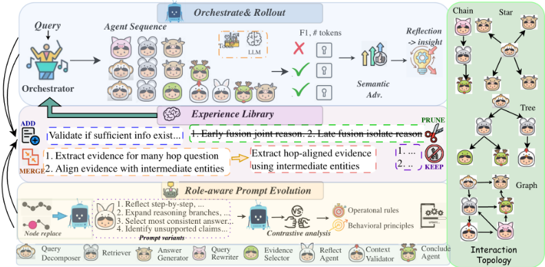
编排器的优化受群体相对策略优化（Group Relative Policy Optimization, GRPO）（Shao et al., 2024; Cai et al., 2025）的启发，该方法通过比较组内采样的动作来更新策略。与免训练的 GRPO（Cai et al., 2025）不同，我们将这一思想扩展到 token 级生成之外，把优化从 token 生成提升至协作拓扑层面。编排器在由 Agent 拓扑 Γ 构成的结构化动作空间上运行，在全局策略层面执行基于组的优化。给定查询 q，编排器会采样一组候选 Agent 序列。每条序列通过调用相应的 Agent 得以执行，产生轨迹 τ_i，随后对该轨迹进行评估以获得奖励。我们不依赖标量优势，而是采用分层比较：首先依据下游任务性能（例如 F1 分数）对轨迹进行排序，然后再依据效率排序，效率以所有 Agent 消耗的输入与输出 token 总数来度量。随后，编排器被提示阐明组内相对成功与失败的原因，从而产生一组自然语言洞见 I = π_O({τ_i}_{i=1}^G)。为提高诊断精度，我们聚焦于明确同时包含成功与失败轨迹的组，其充当组相对的语义优势。这些语义优势编码了关于有效推理策略、Agent 交互以及失败模式的结构化知识，实际上以可解释且可组合的信号取代了数值梯度。因此，编排器治理的是高层结构与协调（宏观），而非细粒度的文本输出（微观）。这些洞见经由选择性整合加以甄选整理，构成了经验库（§3.2）的核心。
将提炼出的经验以可检索的上下文示例（in-context demonstrations）形式加以存储，已被证明能够有效塑造未来行为（Zhao et al., 2024; Ouyang et al., 2025; Xu et al., 2025b）。基于这一原则，HERA 采用经验库 E，用于累积由对成功轨迹与失败轨迹的反思性比较所得到的语义优势，既充当情景记忆（episodic memory），又充当编排器的优化媒介。
E 以“画像-洞见-效用”（Profile-Insight-Utility）结构 (c, z, u) 加以刻画，其中 c 表示查询的特征或类型，z 为自然语言洞见，u 表示效用（utility），用于衡量 z 的经验成功率，即该洞见在后续 Agent 编排中被成功应用的频率。E 通过整合（consolidation）操作在线更新：ADD 插入与任何现有条目均不相同的洞见；MERGE 合并语义相似或互补的条目；PRUNE 移除相互冲突或效用较低的洞见，以维持可泛化的洞见，同时防止无节制增长；KEEP 则使 E 保持不变。
经验作为先验。给定查询 q，编排器首先分析其特征，并从 E 中检索一组相关洞见。检索需平衡两个目标：最大化经验效用 u，即优先选择历史上曾促成成功协调的洞见；以及保持多样性，通过选择与已选洞见语义不同且先前使用频率较低的洞见来实现。检索到的洞见为编排器对 Agent 的选择与排序提供依据，引导多步执行走向表现优异的策略。通过结合高效用与多样化的洞见，编排器使执行偏向于在最小化 token 消耗的同时最大化任务准确率。以此方式，E 充当结构化的、经验驱动的先验，在不修改底层 LLM 的情况下实现上下文策略改进。
HERA 编排器在离散推理程序上具有自然的期望最大化（EM）解释。在 E-step 中，系统在当前策略下采样轨迹，从而近似高奖励推理拓扑上的后验分布。在 M-step 中，语义洞见被提取并整合到经验库中，从而更新策略的潜在表示。此外，使用冻结的 LLM 引入了隐式正则化，类似于带 KL 约束的策略优化。由于更新通过上下文增强而非参数修改来实现，所诱导的策略始终接近原始模型分布。这一表述表明，HERA 对候选执行基于能量的重加权，从而确保稳定且一致的改进。我们在附录 A 中提供了详细的理论分析。
全局策略无法防止多智能体系统中的纠正性失败（Agent 忽略可操作的错误信号并重复错误）或增强性失败（Agent 尽管执行成功却仍坚持次优策略）(Zhang et al., 2025a)，这促使我们提出角色感知提示演化（Role-aware Prompt Evolution, RoPE）。
多智能体系统中的一个关键挑战是将全局轨迹结果归因到单个 Agent，尤其是当 Agent 间的依赖关系使直接的信用分配变得模糊时。RoPE 通过聚焦于被编排器判定为表现不佳的 Agent 来解决这一问题，而编排器会对完整轨迹进行评估。形式化地说，如果编排器将某个 Agent 认定为导致轨迹失败的主要因素，则该 Agent 被视为表现不佳。
为支持系统性的改进，我们为每个 Agent 维护一个缓冲区，其中包含其近期的失败轨迹。该缓冲区使 RoPE 能够分析反复出现的错误、识别一致的失败模式，并为有针对性的提示改进提供上下文证据。给定时刻 t 下表现不佳的 Agent N i，我们检索其近期的失败轨迹，然后生成提示变体，并使用这些提示变体重新执行原始的完整 Agent 轨迹。随后，RoPE 进行对比分析，沿两个互补的维度提取可操作的改进：(i) 操作规则（∆ ρ op i）：从近期失败中得出的短期纠正行为；(ii) 行为原则（∆ ρ bp i）：从跨多条轨迹的模式中提炼出的长期策略。形式化地，提示更新可以分解为：
其中，∆ ρ op i 用于处理即时失败纠正，∆ ρ bp i 则促进策略性泛化。提示变体沿诸如彻底性、风险敏感性、纠错和启发式注入等行为轴生成，从而实现结构化探索，以优化准确性、鲁棒性和计算成本（提示细节见附录 B）。
在变体评估之后，被选中的更新通过提示整合融入 Agent 的提示中，该过程会剪除冗余或低效用的指令，以保持紧凑且连贯的表示。形式化地，这可以表示为一个投影：
其中，C 表示对提示长度与连贯性的约束。在底层大语言模型（LLM）保持固定的情况下，提示演化会使 Agent 的有效策略产生受控偏移：
其中，x , y 分别表示某个 Agent 的输入上下文和输出上下文，π N new i 表示其条件生成策略。由提示诱导的项 f ρ i ( x , y ) 会对该映射产生偏置，使其偏向与更新后的角色特定指导更加吻合的输出 y。这会引发一种隐式正则化效应，类似于 KL 约束，从而确保策略更新稳定且一致。
尽管提示演化能够改善 Agent 层面的行为，但持续出现的失败往往表明协调拓扑存在结构性缺陷。为解决这一问题，当轨迹持续失败（例如 F1 = 0）时，HERA 会执行拓扑变异。在由编排器识别出此类情况后，HERA 通过两种方式探索替代结构：要么用替代 Agent N ′ i 替换失败的 Agent N i，要么在拓扑中增加额外的 Agent，从而得到候选拓扑 Γ ′。随后，这些候选拓扑被纳入同一个无梯度 GRPO 优化循环中。这一过程使协调结构与 Agent 行为得以共同演化。
| Dataset.Metrics | HotpotQA.Acc | HotpotQA.EM | HotpotQA.F1 | 2WikiQA.Acc | 2WikiQA.EM | 2WikiQA.F1 | MusiQue.Acc | MusiQue.EM | MusiQue.F1 | AmbigQA.Acc | AmbigQA.EM | AmbigQA.F1 | Bamboogle.Acc | Bamboogle.EM | Bamboogle.F1 | HoVer.Acc |
|---|---|---|---|---|---|---|---|---|---|---|---|---|---|---|---|---|
| Single-turn Retrieval | Single-turn Retrieval | Single-turn Retrieval | Single-turn Retrieval | Single-turn Retrieval | Single-turn Retrieval | Single-turn Retrieval | Single-turn Retrieval | Single-turn Retrieval | Single-turn Retrieval | Single-turn Retrieval | Single-turn Retrieval | Single-turn Retrieval | Single-turn Retrieval | Single-turn Retrieval | Single-turn Retrieval | Single-turn Retrieval |
| Qwen2.5-14B-Instruct | 43.53 | 35.72 | 46.14 | 26.64 | 26.25 | 31.85 | 9.23 | 7.00 | 13.75 | 39.78 | 36.65 | 50.23 | 27.20 | 34.70 | 34.35 | 45.50 |
| Qwen3-14B | 44.47 | 36.25 | 47.56 | 31.57 | 31.10 | 37.79 | 13.16 | 9.99 | 15.72 | 38.47 | 36.10 | 50.91 | 31.54 | 29.60 | 38.31 | 49.05 |
| Qwen3-8B | 41.35 | 33.70 | 45.10 | 26.37 | 26.10 | 32.12 | 11.49 | 8.71 | 13.62 | 36.02 | 33.80 | 47.70 | 23.87 | 22.40 | 30.28 | 50.15 |
| GPT-4o-mini | 46.30 | 37.74 | 49.30 | 28.42 | 28.41 | 35.11 | 16.63 | 13.94 | 19.60 | 37.40 | 33.80 | 47.99 | 38.36 | 36.00 | 42.81 | 47.95 |
| Llama3-3.1-8B-instruct | 33.16 | 27.02 | 35.14 | 20.40 | 20.35 | 25.11 | 8.43 | 6.43 | 12.61 | 18.03 | 18.96 | 24.60 | 20.46 | 19.20 | 27.24 | 49.90 |
| Advanced RAG | Advanced RAG | Advanced RAG | Advanced RAG | Advanced RAG | Advanced RAG | Advanced RAG | Advanced RAG | Advanced RAG | Advanced RAG | Advanced RAG | Advanced RAG | Advanced RAG | Advanced RAG | Advanced RAG | Advanced RAG | Advanced RAG |
| Search-r1-7B Iter-RetGen (Qwen2.5-7B) | 51.11 | 41.94 | 54.18 | 48.89 | 44.69 | 49.20 | 20.45 | 18.58 | 25.73 | 47.32 | 45.88 | 65.54 | 35.79 | 32.64 | 43.93 | 47.76 |
| 20.37 | 16.71 | 24.59 | 47.71 | 43.54 | 49.12 | 19.89 | 16.79 | 21.04 | - | - | - | 35.33 | 34.12 | 40.65 | 51.29 | |
| Plan-RAG 8b | 29.95 | 25.96 | 37.51 | 30.53 | 27.38 | 31.68 | 13.08 | 9.90 | 13.34 | - | - | - | 30.01 | 23.57 | 32.12 | 50.33 |
| SELF-RAG (llama2-7B) | 23.85 | 13.64 | 25.07 | 40.82 | 37.30 | 42.02 | 8.47 | 7.16 | 14.16 | 28.51 | 24.03 | 39.62 | 25.80 | 22.66 | 30.05 | 40.52 |
| R1-Searcher 7B | 41.15 | 32.54 | 50.69 | 40.11 | 35.38 | 45.19 | 18.21 | 13.51 | 19.19 | - | - | - | 41.00 | 38.85 | 46.76 | 51.56 |
| ExSearch (Qwen2.5-7B) | 55.04 | 45.11 | 58.22 | 44.83 | 44.03 | 51.56 | 22.73 | 19.58 | 27.10 | - | - | - | 56.12 | 51.27 | 63.80 | 66.62 |
| DeepResearcher-7B | 40.65 | 35.23 | 58.86 | 49.40 | 54.35 | 64.05 | 24.53 | 18.56 | 25.57 | 49.74 | 42.23 | 51.50 | 37.42 | 34.20 | 44.40 | 58.19 |
| IRCoT (GPT-4o-mini) | 40.39 | 33.14 | 54.93 | 38.73 | 35.50 | 42.01 | 19.11 | 18.23 | 25.00 | - | - | - | 34.88 | 30.73 | 33.97 | 55.37 |
| InstructRAG-8B | 34.40 | 33.15 | 34.83 | 36.98 | 35.45 | 40.72 | 16.11 | 14.19 | 19.50 | 40.07 | 39.72 | 40.73 | 26.16 | 23.44 | 31.18 | 56.76 |
| CORAG-8B (Greedy) | 38.02 | 32.95 | 52.85 | 39.09 | 35.43 | 46.62 | 16.45 | 15.98 | 21.00 | 32.10 | 27.25 | 43.95 | 33.03 | 31.61 | 41.25 | 40.82 |
| MMOA-RAG-8B | 30.02 | 26.02 | 34.75 | 35.56 | 31.89 | 38.58 | 16.47 | 13.36 | 18.82 | 38.85 | 34.75 | 48.59 | 34.47 | 31.76 | 42.01 | 58.19 |
| AceSearcher-8B | 42.91 | 37.19 | 68.07 | 50.83 | 45.59 | 52.75 | 25.24 | 19.10 | 26.62 | - | - | - | 47.21 | 45.12 | 51.91 | 59.37 |
| Ours | Ours | Ours | Ours | Ours | Ours | Ours | Ours | Ours | Ours | Ours | Ours | Ours | Ours | Ours | Ours | Ours |
| HERA (Qwen-3-14B) | 55.38 | 52.50 | 63.03 | 60.02 | 59.50 | 64.77 | 27.19 | 26.57 | 35.82 | 54.43 | 48.74 | 67.81 | 49.01 | 46.46 | 60.53 | 67.35 |
| HERA (Llama-3.1-8) | 53.28 | 48.01 | 57.91 | 52.62 | 46.70 | 55.42 | 25.04 | 24.46 | 31.07 | 48.53 | 43.46 | 60.72 | 46.60 | 45.22 | 56.31 | 60.31 |
| Dataset.Metrics | HotpotQA.Acc | HotpotQA.EM | HotpotQA.F1 | 2WikiQA.Acc | 2WikiQA.EM | 2WikiQA.F1 | MusiQue.Acc | MusiQue.EM | MusiQue.F1 | AmbigQA.Acc | AmbigQA.EM | AmbigQA.F1 | Bamboogle.Acc | Bamboogle.EM | Bamboogle.F1 | HoVer.Acc |
表1将HERA与一系列基线方法进行了比较（直接推理与思维链（CoT）的结果见附录F.2）。主要观察如下：(i) 相较于最先进（SOTA）迭代式与智能体式检索增强生成（RAG）基线取得了一致的提升。与近期SOTA方法相比，HERA在所有数据集上平均取得38.69%的提升，证明了经验引导的编排对交错推理与检索的有效性。在AmbigQA上的最佳表现凸显了HERA对具有多种合理解释的查询的鲁棒性。(ii) 稳健的分布外（OOD）性能。HERA在Bamboogle上排名第二（F1较ExSearch低5.4%），在HoVer上排名第一（较CORAG高64.95%），反映了所积累经验库与不断演化的Agent行为的可迁移性。相比之下，大多数依赖启发式规划或固定迭代检索的已有方法在分布内数据之外的泛化能力较差。(iii) 以无梯度优化实现的高效性。HERA超越了经强化学习（RL）微调的多智能体RAG方法（如MMAO-RAG），表明语义组级优势能够在无需代价高昂的模型更新的情况下，在跨任务与分布偏移场景中带来稳定、一致的改进。(iv) HERA-Qwen在所有数据集上始终优于HERA-Llama，尤其是在跨文档推理与复杂消歧任务上。尽管HERA-Llama在域内仍具竞争力，但其在OOD任务上的性能有所下降，表明其对模糊或稀疏查询的推理与泛化能力有限。
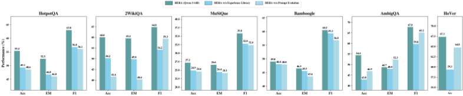
图2展示了以Qwen-3-14B为主干模型时HERA在测试集上的消融实验结果（Llama-3.1-8的结果见附录F.2）。移除经验库会在各数据集上带来一致但适度的性能下降（相对准确率通常下降6%至15%），凸显了其在改善知识引导与跨实例泛化方面的作用。相比之下，去掉提示演化会在多跳问答（multi-hop QA）任务上导致幅度大得多且波动更明显的性能下降（两种主干模型在2WikiQA上相对下降最高达30%），而在这类任务中，精确的分解与轨迹控制至关重要。在歧义密集的数据集AmbigQA上，提示演化引入了一种偏向召回率的偏置：在提升F1的同时偶尔会降低EM，而经验库则通过有据可依的输出提升精确率，从而揭示出一种系统性的EM-F1权衡。这些模式在各主干模型上保持一致，表明各组件的功能贡献在很大程度上与模型无关。更为重要的是，完整的HERA框架始终以非叠加的幅度优于两种消融配置，这表明存在正向的交互效应：提示演化所带来的推理行为改进提升了所存储经验的质量，而这些经验又通过更强的证据锚定反过来强化后续推理。总体而言，这些结果表明，提示演化与经验库分别针对互补的失败模式——程序性正确性与认知可靠性，且二者的协同作用对于稳健的多跳推理至关重要。
我们通过分析整个学习过程中的 token 使用模式，考察性能与数据效率之间可能存在的权衡。我们的分析重点关注两个关键维度：(i) 随着学习推进 token 消耗的动态变化，以及 (ii) token 效率与任务性能之间的相互作用。
我们采用局部加权散点图平滑（LOWESS）（Cleveland, 1981; Dang et al., 2025）对整个学习过程中的 token 消耗进行可视化。图 3 展示了以 HotpotQA 和 2WikiQA 作为代表性任务时的 token 使用趋势。（i）探索-利用转变。在 HotpotQA 上，token 消耗呈现非单调的轨迹。早期的峰值反映了一个探索阶段，在此阶段中，编排器激活多个 Agent、构建较长的推理轨迹，并执行冗余步骤以优化性能。随着经验的积累，token 使用量单调下降，标志着向利用阶段的转变：低效的 Agent 被剔除，推理链被缩短。
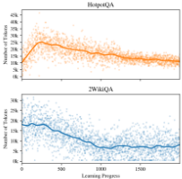
学习进度
随后的平台期表明其已收敛至一个高效的 token 预算。相比之下，2WikiQA 并未出现初始的探索峰值，这表明从先前积累的推理经验中获得的可迁移先验能够以极少的试错支持高效的 Agent 编排。（ii）功能性贡献。token 使用的动态变化与 HERA 的经验库和提示演化紧密耦合。经验库积累高效用且可泛化的经验，而提示的不断演化则使 Agent 能够提升其性能。二者共同驱动了涌现式的计算节俭性，使得无需显式的基于 token 的惩罚即可实现高推理性能。
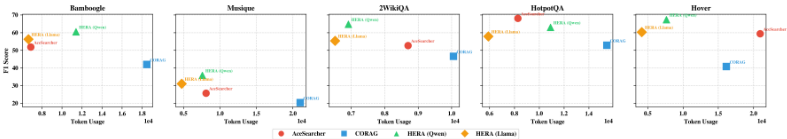
图 4 对比了多跳问答（multi-hop QA）性能与 token 消耗。主要观察包括：(i) 卓越的性能-效率权衡。在所有数据集上，HERA 始终在性能-效率前沿上占据主导地位，在受控的 token 预算下取得更高的 F1 分数。这表明性能提升源于高效的推理轨迹，而非暴力式的上下文扩展。(ii) 骨干模型相关的模式。采用 Qwen-3-14B 的 HERA 取得了最高的绝对性能，而采用 Llama-3.1-8 的 HERA 则始终将 token 消耗降至最低（在大多数数据集上约为 4.7k-6.6k），同时保持了具有竞争力的 F1 分数，表明其具有良好的计算效率。(iii) 相较于基线的一致性能与效率提升。CORAG 在大多数数据集上使用的 token 数量最多（高达 20k+），却未能将这些成本转化为可持续的推理改进或有效的知识复用，从而导致次优的 F1 分数（例如，在 MusiQue 上为 20.30，在 HoVer 上为 40.82）。AceSearcher 则处于中间位置，在适度的 token 使用量与性能之间取得平衡。
7
为了阐明协调的多智能体行为的涌现，我们系统地分析了学习过程中交互拓扑的演化。为此，我们引入了基于拓扑的度量指标，以量化智能体协作中的结构变化。
转换熵（Transition Entropy）量化了智能体间转换的不确定性，捕捉策略层面的动态。设 Prob.(N_j|N_i) 表示从智能体 N_i 到 N_j 的经验转换概率，则转换熵定义为：
我们在学习过程中使用滑动窗口计算 Htrans。
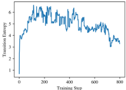
训练步数
除了探索-利用动态之外，图 5 显示，熵在经历初始上升后稳定在中间水平，反映出兼具结构性与灵活性的智能体交互的涌现。这一平台期表明，HERA 在保持受控探索的同时巩固了高价值的转换序列，使系统能够在不破坏既有协调的前提下整合新颖的推理策略。这一模式凸显了经验库与提示演化的互补作用：前者强化有效的多智能体路径，后者则自适应地细化智能体行为，使其在功能上与任务目标保持一致。值得注意的是，熵在中间水平上的平台期表明，即使在利用阶段也存在受控探索，这既能防止过早收敛至次优策略，又允许整合新颖的合作路径。
为了系统地刻画 HERA 的拓扑演化，我们将每条轨迹建模为图 G τ = ( V , E )，其中节点表示智能体，边表示交互。我们通过定义图论指标来量化结构与功能特性：(a) 智能体数量 | V |：一条轨迹中涉及的不同智能体总数，反映协作的广度。(b) 节点效率：单智能体贡献，形式化定义为 F1 ( τ ) | V |，刻画单智能体效用。(c) 自环：自转换的频率，反映潜在的冗余或退化的推理。(d) 环路数量：捕获迭代推
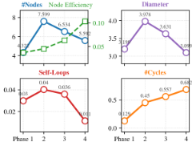
理模式的闭环路径数量。(e) 直径：任意两个节点之间最短路径中的最长者，表示最大推理深度。
我们将学习过程划分为四个阶段——初始、探索、精炼和优化，并针对每种问题类型分析归一化指标。如图 6 所示，早期轨迹狭窄而浅，智能体数量少、环路极少、直径有限，反映出稀疏的协调。在探索阶段，系统动态地招募更多智能体，使直径增大、环路形成增多，从而捕获迭代推理与中间验证。到精炼阶段，轨迹收缩：冗余的智能体和自环被剪除，直径减小，节点效率上升。这种选择性保留由经验库和提示演化共同引导：经验库强化高价值的交互拓扑，提示演化则细化智能体行为与中间输出。优化阶段呈现出节点最少、单智能体效用高、并策略性保留环路的紧凑链，体现了效率与鲁棒性之间的平衡。
总体而言，不断演化的拓扑结构表明，HERA 的双重机制——结构化经验检索与自适应提示演化——能够实现从探索性、分散的智能体交互向紧凑、高效用且富有韧性的多智能体系统的原则性转变。
检索增强生成（Retrieval-Augmented Generation, RAG）通过利用外部证据来提升大语言模型（LLM）的性能 (Izacard et al., 2023; Lewis et al., 2020; Gao et al., 2023b; Tang & Yang, 2024; Xiong et al., 2024; Fan et al., 2024)。早期方法将检索嵌入模型架构之中，允许直接以检索到的上下文作为条件 (Khandelwal et al., 2020; Liu et al., 2024a; Izacard & Grave, 2020; Wang et al., 2023; Borgeaud et al., 2022; Izacard et al., 2023; Guu et al., 2020)。后续方法将 RAG 模块化为检索前组件 (Chan et al., 2024; Gao et al., 2023a; Ma et al., 2023) 与检索后组件 (Abdallah et al., 2025; Xu et al., 2023; Li & Ramakrishnan, 2025)，以增强检索与推理，并将检索与结构化推理协同起来以完成多步任务 (Jeong et al., 2024a; Lee et al., 2024; Asai et al., 2024; Shao et al., 2023)。诸如 DeepResearcher Zheng et al. (2025); Li et al. (2025b); Huang et al. (2025) 等新兴范式将 RAG 扩展到智能体化（agentic）(Xie et al., 2025; Fang et al., 2025; Chen et al., 2025c;b) 工作流中，将检索嵌入迭代推理 (Chen et al., 2025a; Shi et al., 2025; Li et al., 2025a; Jin et al., 2025; Song et al., 2025b) 与工具调用 (Song et al., 2025b; Sun et al., 2025) 之中，以应对复杂问题。
多智能体编排 先前的工作 (Chen et al., 2023; Liu et al., 2024b; Qian et al., 2025; Khan et al., 2024; Liang et al., 2024; Wang et al., 2024; Iqbal et al., 2022) 常将编排视为通过强化学习优化的顺序流水线 (Nie et al., 2025; Wang et al., 2026)。动态方法在推理时根据任务特征或中间结果调整智能体交互 (Yu, 2026; Yuan et al., 2025; Zhang et al., 2026; Chang & Geng, 2025)，但会带来高昂的协调开销，并依赖准确的中间评估。另一些方法则将编排视为全局决策问题，在整个交互结构上学习统一策略 (Ke et al., 2026; Zhang et al., 2025c)。提示策略与工具管理可改善智能体协调 (Lin et al., 2025; Su et al., 2025; Zhang et al., 2025b; Dang et al., 2025; Du et al., 2024)，但现有方法往往是静态的 (Zhou & Chan, 2026)、适应性较弱，或受计算与可扩展性约束的限制 (Choi et al., 2024)。
提示优化与演化
自动提示优化（Automatic Prompt Optimization）将提示视为对种子、反馈、候选生成与选择的黑盒搜索（Ramnath et al., 2025）。程序化框架（Khattab et al., 2024）编译 LM 流水线，并利用用户指标离线优化提示，而文本反向传播（Yuksekgonul et al., 2025; Hu et al., 2024; Ma et al., 2025）则利用自然语言反馈来细化协作协议与行为指令。近期工作联合优化智能体结构与提示（Tian et al., 2025; Murthy et al., 2025; Spiess et al., 2025），采用基于搜索的策略（Zhang et al., 2024）与遗传算法（Agrawal et al., 2026），并将提示优化视为经验驱动的适应（Yao et al., 2022; Shinn et al., 2023; Zhao et al., 2024; Pei et al., 2025; Xie et al., 2026）。
我们提出了 HERA，这是一种层次化框架，通过经验库与角色感知的智能体提示共同演化多智能体编排。经验库整合了可迁移的编排策略，而提示演化则使智能体行为能够依据运行原则与行为原则进行角色特定的细化。HERA 在多跳与歧义密集型基准测试上取得了更优的性能，且无需依赖基于梯度的训练。拓扑分析揭示了涌现的自组织现象：稀疏探索催生出紧凑而高效用的多智能体网络，既体现了高效的协调能力，也体现了鲁棒性。未来工作可研究智能体角色的元优化、自适应多轮编排以及资源感知的自主演化，为层次化角色结构、条件化智能体排序以及 token 或延迟约束下的高效推理铺平道路。
9
作者可以在论文中添加一份可选的伦理声明。对于涉及伦理问题的论文，本节将作为评审流程的一部分被评估。伦理声明应置于论文末尾。该部分不计入页数限制，但篇幅不应超过 1 页。
设 q ∈ Q 表示输入查询，E 表示经验库，N 表示 Agent 池，Γ 表示规定 Agent 序列、顺序与依赖关系的 Agent 拓扑，τ 表示执行轨迹。编排器（orchestrator）诱导出一个策略以获得交互拓扑：
HERA 可以被严格地解释为在结构化空间 Γ 上进行的无梯度策略迭代（policy iteration）。每次迭代 t 包含两个步骤：
策略评估（Policy Evaluation）。从当前策略 π O 中采样一组 rollout/拓扑并加以执行，以获得轨迹和奖励。这构成了在当前策略下价值函数的经验性蒙特卡洛（Monte Carlo）估计。
策略改进（Policy Improvement）。通过反思并将高奖励轨迹与失败轨迹进行比较，得到组相对语义优势。这些洞见经过提炼后被纳入经验库 E：
其中 ¯ R 为语义基线。
更新后的经验库会修改条件化上下文，进而重塑诱导分布：
而无需更新 π O。
HERA 呈现出一种类似于期望最大化（Expectation-Maximization, EM）的迭代结构。
将 Agent 拓扑 Γ 视为隐变量，查询 q 视为观测输入，而奖励 R ( τ ) 则作为隐式似然的代理。由此，该迭代过程类似于：
并选择高奖励的拓扑，会在有效推理程序上诱导出一个近似后验分布：
这代表的是一种经奖励筛选的经验分布，而非经过恰当归一化的概率后验。
在参数 π O 上，HERA 执行的是非参数化更新：
其通过丰富条件化上下文（经验库），隐式地增加了高性能结构上的概率质量。此处的 R ( τ ) 充当的是启发式代理，而非严格意义上的概率目标。
冻结的基础模型 π O 提供了隐式正则化。由于策略更新是通过上下文增强 E 来中介的，而非通过修改参数实现，因此所得策略可被视为对基础分布的一种基于能量的重加权：
其中 f E ( Γ , q ) 表示由经验库引入的对数比率偏置。该表述在结构上等价于 KL 约束策略优化问题的最优解：
其闭式解恰为
因此，冻结的基础模型充当了隐式的 KL 锚点，防止策略坍缩，并确保更新后的分布保持在原始模型的支撑集之内。这种稳定性特性在无约束的策略梯度方法中并不存在，因为在这类方法中，激进的更新可能会破坏基础分布的稳定性。
你是一个编排器（orchestrator），负责管理一个由专门化 Agent 组成的团队，用于执行多跳问答任务。你的目标是设计一个有效的多智能体执行拓扑，以正确回答给定的查询。
{ agent descriptions }
你已从过去的执行中检索到以下相关经验：{ retrieved experiences }
}
{ "query_profile": "<对查询类型的一句话描述>", "selected_agents": ["<agent_name>", ...], "execution_order": [ {"step": 1, "agent": "<agent_name>", "depends_on": [], "mode": "sequential|parallel"}, ... ] }
21
你是一个编排器（orchestrator），正在评估针对同一查询的一组多智能体执行轨迹。你的目标是找出其中一些轨迹成功而另一些失败的原因，并提取可泛化的洞见，以指导未来的编排。
以下 { G } 条轨迹已被执行，首先按任务性能（F1）排序，其次按效率（消耗的 token 总数）排序：
{ "success_factors": ["<因素>", ...], "failure_modes": ["<失败模式>", ...], "insights": [ { "query_type": "<该洞见适用的类型>", "insight": "<可操作的自然语言洞见>" }, ... ] }
22
你正在为一个多智能体问答系统管理经验库。该库以如下形式的结构化条目存储洞见：
( 查询画像 c , 洞见 z , 效用 u )，其中效用 u 反映洞见 z 成功促成 Agent 编排的频率。当前经验库：{ current library } 从最近一次执行组中提取的新洞见：{ new insights }
{ "operations": [ { "operation": "ADD|MERGE|PRUNE|KEEP", "new_insight": "<新洞见的文本>", "target_entry_ids": ["<若为 MERGE 或 PRUNE，则为现有条目的 id>"], "merged_insight": "<若为 MERGE，则为合并后的洞见文本，否则为 null>", "rationale": "<用一句话解释该决策>" }, ... ] }
23
你负责在严格的长度与结构约束下，管理并演化单个 agent 的 prompt。你的任务是对该 agent 的 prompt 进行精炼、优化与整合，以确保其清晰性、一致性，并符合运行与行为方面的要求。
当前 Agent 提示词：
{CURRENT_PROMPT}
建议的操作规则：
{operational_rules}
待翻译内容为未填充的模板占位符 `{behavioral_principles}`，并非论文正文，因此没有可翻译的实际文本。
请提供「Proposed Behavioral Principles」章节的实际英文内容（即该变量应替换的具体段落），我将按照术语表和强制规则逐段忠实翻译，并原样保留所有 [[FIGURE:...]] / [[TABLE:...]] / [[EQUATION:...]] 占位符。
生成一个提示差异（prompt diff），清晰地指出在满足上述约束条件的前提下，将所提议的规则和原则整合到当前 agent 提示中所需的修改。以结构化格式突出显示新增、删除和替换的内容。
24
我们在实验中使用以下数据集：1. 2WikiMultihopQA (Ho et al., 2020)：一个多跳问答（multi-hop QA）数据集，该数据集同时利用 Wikipedia 文本和结构化的 Wikidata 来构建问题，并显式提供经过标注的推理路径（证据链），以确保并评估跨多个文档的真正多步推理。
| Dataset | Train | Val | Test | Total | Reasoning |
|---|---|---|---|---|---|
| 2WikiQA | 154K | 16K | 22K | 192K | 2-hop (cross-doc) |
| HotpotQA | 90K | 7.4K | 7.4K | 105K | 2-hop (bridge/comp) |
| MuSiQue | 19K | 2.4K | 2.4K | 24K | 2-4 hop (compositional) |
| Bamboogle | - | - | 125 | 125 | Multi-hop (adversarial) |
| HoVer | 13K | 1.8K | 2.7K | 18K | 2-4 hop (verification) |
| AmbigQA | 10K | 2K | 2K | 14K | Ambiguity resolution |
| Dataset | Train | Val | Test | Total | Reasoning |
图 7 展示了用于构建训练数据的四个数据集中推理类型与复杂度的分布。
26
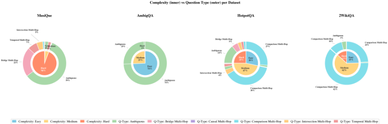
我们在各基线方法之间统一了解码与提示设置，以确保公平比较。对于大语言模型（LLM）Qwen-3-4B、8B 和 14B（Yang et al., 2025a）、Qwen2.5-Instruct-7B（Hui et al., 2024）、LLaMA3.1-8B（Grattafiori et al., 2024）以及 GPT-4o-mini（Hurst et al., 2024），我们遵循其官方指南进行设置。我们将 temperature 设为 0.6，top-p 设为 0.95，top-k 设为 20，min-p 设为 0。
Table 3: Additional comparison between HERA and baselines without RAG.
| Dataset.Metrics | HotpotQA.Acc | HotpotQA.EM | HotpotQA.F1 | 2WikiQA.Acc | 2WikiQA.EM | 2WikiQA.F1 | MusiQue.Acc | MusiQue.EM | MusiQue.F1 | AmbigQA.Acc | AmbigQA.EM | AmbigQA.F1 | Bamboogle.Acc | Bamboogle.EM | Bamboogle.F1 | HoVer.Acc |
|---|---|---|---|---|---|---|---|---|---|---|---|---|---|---|---|---|
| Direct Inference w/o RAG | Direct Inference w/o RAG | Direct Inference w/o RAG | Direct Inference w/o RAG | Direct Inference w/o RAG | Direct Inference w/o RAG | Direct Inference w/o RAG | Direct Inference w/o RAG | Direct Inference w/o RAG | Direct Inference w/o RAG | Direct Inference w/o RAG | Direct Inference w/o RAG | Direct Inference w/o RAG | Direct Inference w/o RAG | Direct Inference w/o RAG | Direct Inference w/o RAG | Direct Inference w/o RAG |
| Llama3-3.1-8B-instruct | 15.63 | 9.60 | 22.13 | 24.13 | 16.53 | 28.67 | 0.20 | 0.99 | 7.18 | 4.80 | 4.80 | 7.96 | 10.74 | 8.29 | 18.55 | 5.80 |
| Qwen2.5-7B-instruct | 19.30 | 13.17 | 27.97 | 24.43 | 19.70 | 28.88 | 2.61 | 2.40 | 10.72 | 8.70 | 8.00 | 8.80 | 16.73 | 14.04 | 25.65 | 3.08 |
| Qwen3-8B | 17.83 | 11.60 | 26.49 | 24.37 | 18.80 | 28.83 | 2.69 | 2.52 | 10.37 | 11.20 | 9.60 | 18.35 | 14.19 | 11.84 | 23.24 | 5.90 |
| Qwen3-14B | 21.40 | 14.53 | 30.68 | 28.00 | 20.87 | 32.69 | 2.61 | 2.36 | 10.03 | 6.40 | 4.80 | 12.97 | 17.73 | 14.34 | 27.98 | 3.94 |
| CoT w/o RAG | CoT w/o RAG | CoT w/o RAG | CoT w/o RAG | CoT w/o RAG | CoT w/o RAG | CoT w/o RAG | CoT w/o RAG | CoT w/o RAG | CoT w/o RAG | CoT w/o RAG | CoT w/o RAG | CoT w/o RAG | CoT w/o RAG | CoT w/o RAG | CoT w/o RAG | CoT w/o RAG |
| Llama3.1-8B-instruct | 16.20 | 10.14 | 24.34 | 24.70 | 16.74 | 28.73 | 0.27 | 1.40 | 7.64 | 15.45 | 5.20 | 11.90 | 11.48 | 9.00 | 21.33 | 15.34 |
| Qwen2.5-7B-instruct | 19.93 | 13.73 | 28.24 | 24.37 | 18.00 | 27.94 | 4.34 | 4.14 | 11.47 | 28.00 | 25.60 | 38.16 | 17.88 | 15.23 | 28.14 | 15.93 |
| Qwen3-8B | 21.30 | 15.47 | 29.36 | 25.17 | 17.63 | 29.51 | 3.68 | 3.56 | 11.03 | 29.60 | 23.20 | 39.83 | 16.78 | 14.29 | 26.73 | 20.10 |
| Qwen3-14B | 19.80 | 13.27 | 28.48 | 25.33 | 19.03 | 29.70 | 2.61 | 2.44 | 10.03 | 12.00 | 10.40 | 19.38 | 14.89 | 12.99 | 24.38 | 22.09 |
| Ours | Ours | Ours | Ours | Ours | Ours | Ours | Ours | Ours | Ours | Ours | Ours | Ours | Ours | Ours | Ours | Ours |
| HERA (Qwen-3-14B) | 55.38 | 52.50 | 63.03 | 60.02 | 59.50 | 64.77 | 27.19 | 26.57 | 35.82 | 54.43 | 48.74 | 67.81 | 49.01 | 46.46 | 60.53 | 67.35 |
| HERA (Llama-3.1-8) | 53.28 | 48.01 | 57.91 | 52.62 | 46.70 | 55.42 | 25.04 | 24.46 | 31.07 | 48.53 | 43.46 | 60.72 | 46.60 | 45.22 | 56.31 | 60.31 |
| Dataset.Metrics | HotpotQA.Acc | HotpotQA.EM | HotpotQA.F1 | 2WikiQA.Acc | 2WikiQA.EM | 2WikiQA.F1 | MusiQue.Acc | MusiQue.EM | MusiQue.F1 | AmbigQA.Acc | AmbigQA.EM | AmbigQA.F1 | Bamboogle.Acc | Bamboogle.EM | Bamboogle.F1 | HoVer.Acc |
Table 3 highlights the performance of HERA compared to direct and CoT inference without RAG.Across all datasets, HERA exhibits substantial gains over baseline LLMs, with improvements particularly pronounced on multi-hop and ambiguous QA tasks. Notably, HERA (Qwen-3-14B) consistently outperforms HERA (Llama-3.1-8), reflecting its superior capability in complex reasoning scenarios. Across metrics, HERA achieves more than double the F1 scores of standard CoT baselines on several datasets, indicating that experience-guided orchestration and prompt evolution provide strong advantages even without retrieval augmentation. Gains are also robust across both in-domain and sparse or ambiguous queries, demonstrating that structured inter-agent coordination and semantic group-level reasoning significantly enhance reasoning fidelity over single-agent inference.
如图 8 所示，以 Llama-3.1-8 为骨干的 HERA 与 HERA-Qwen 呈现出相似的趋势，但 MusiQue 和 Bamboogle 除外。Prompt Evolution 是最关键的组件。移除该组件后，几乎所有数据集上都出现了最大幅度的下降。例如，F1 在 HotpotQA 上从 58.0 降至 51.2，在 2WikiQA 上从 55.5 降至 53.3，在 AmbigQA 上从 60.8 降至 58.0。这表明对 agent 提示的自适应更新对于提升推理性能至关重要，尤其是在多跳和歧义查询上。
27
移除 Experience Library 则带来中等幅度但一致的下降，例如，F1 在 HotpotQA 上从 58.0 降至 52.5，在 2WikiQA 上从 55.5 降至 46.75。这表明存储的经验有助于性能稳定性和跨实例泛化。
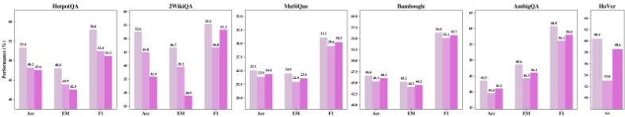
The pseudocode for the proposed HERA is presented below.
Algorithm 1 HERA -Top Level
| 0 | 1 | 2 |
|---|---|---|
| Require: query q , corpus D , orchestrator π O , iterations T | Require: query q , corpus D , orchestrator π O , iterations T | Require: query q , corpus D , orchestrator π O , iterations T |
| Ensure: optimized experience library E , evolved agent prompts { ρ 1 , . . . , ρ K } 1: E ← ∅ | Ensure: optimized experience library E , evolved agent prompts { ρ 1 , . . . , ρ K } 1: E ← ∅ | Ensure: optimized experience library E , evolved agent prompts { ρ 1 , . . . , ρ K } 1: E ← ∅ |
| 2: N ← INITIALIZEAGENTS () | 2: N ← INITIALIZEAGENTS () | ▷ each N i = ( π i , ρ i , T i ) |
| 3: for t = 1 to T do | 3: for t = 1 to T do | 3: for t = 1 to T do |
| 4: | Sample query q ∼ Q | Sample query q ∼ Q |
| 5: | Γ ← ORCHESTRATE ( q , E , N ) | ▷ Orchestration ▷ sample topology: order + dependencies |
| 6: | τ ← EXECUTE ( Γ , q , D ) ▷ run agents, produce trajectory ▷ | τ ← EXECUTE ( Γ , q , D ) ▷ run agents, produce trajectory ▷ |
| 7: | Gradient-free GRPO-style orchestrator update ORCHESTRATORUPDATE ( q , E , N ) | ▷ |
| 8: | RoPE: agent prompt evolution N fail ← π O .IDENTIFYFAILEDAGENTS ( τ ) | RoPE: agent prompt evolution N fail ← π O .IDENTIFYFAILEDAGENTS ( τ ) |
| 9: | for each N i ∈ N fail do | for each N i ∈ N fail do |
| 10: | ROPE ( N i , τ ) | ROPE ( N i , τ ) |
| 11: | end for | end for |
| 12: | end for | end for |
| 13: | return E , { ρ 1 , . . . , ρ K } | return E , { ρ 1 , . . . , ρ K } |
| 0 | 1 | 2 |
28
Algorithm 2 OrchestratorUpdate (GRPO-style) Require: query q , experience library E , agent set N , group size G 1: group ← [ ] 2: for i = 1 to G do 3: Γ i ← SAMPLETOPOLOGY ( q , E , N ) 4: τ i ← EXECUTE ( Γ i , q , D ) 5: r task ← EVALUATE ( τ i , metric = F1 ) 6: r eff ← EVALUATE ( τ i , metric = token cost ) 7: group.APPEND ( ( Γ i , τ i , r task , r eff ) ) 8: end for 9: if ¬ HASMIXEDOUTCOMES ( group ) then 10: return ▷ Reflection and insight extraction is only based on groups that have explicit successful and failed trajectories 11: end if 12: group sorted ← SORT ( group, key = ( r task ↓ , r eff ↑ )) ▷ task perf first, efficiency second 13: I ← π O .REFLECTONGROUP ( group sorted ) ▷ natural language semantic advantages 14: EXPERIENCELIBRARYUPDATE ( E , I , q ) Algorithm 3 ExperienceLibraryUpdate (ADD / MERGE / PRUNE / KEEP) Require: experience library E , new insights I , query q 1: c ← CHARACTERIZEQUERY ( q ) 2: for each insight z ∈ I do 3: matches ← RETRIEVE ( E , z , c ) 4: if matches = ∅ then 5: E .ADD ( ( c , z , u = 0 ) ) ▷ novel insight 6: else if COMPLEMENTARY ( z , matches ) then 7: E .MERGE ( z , matches ) ▷ combine semantically similar entries 8: else if CONFLICTS ( z , matches ) then 9: low u ← FILTERLOWUTILITY ( matches ) 10: E .PRUNE ( low u ) ▷ remove conflicting or stale entries 11: else 12: E .KEEP () ▷ no change needed 13: end if 14: end for 15: for each ( c , z , u ) ∈ E do 16: if z was used and outcome = success then 17: u ← u + 1 18: end if 19: end for Algorithm 4 Orchestrate (experience-guided topology sampling) Require: balance utility and diversity
query q , experience library E , agent set N 1: c ← CHARACTERIZEQUERY ( q ) 2: E rel ← [ ] 3: for each ( c ′ , z , u ) ∈ E sorted by u descending do 4: if SIMILAR ( c ′ , c ) and ¬ REDUNDANT ( z , E rel ) then 5: E rel.APPEND (( z , u )) ▷ 6: end if 7: end for 8: Γ ∼ π O ( · | q , E rel , N ) ▷ Γ specifies agents, execution order, dependencies 9: return Γ
29
输入：当前拓扑 Γ，失败 Agent N fail ，Agent 池 N ▷ 当轨迹持续失败时触发，例如 F1 = 0
▷ 候选拓扑
我们在本节中提供案例研究，既包括成功案例，也包括失败案例。注意：每个案例图中的 表示复用该 Agent。
案例 1（图 9）展示了一种最优的比较型多跳（Comparison Multi-hop）推理模式：编排器生成并行拓扑，使相互独立的实体事实（每部电影的国家）得以并行检索，随后再通过一个串行聚合步骤进行比较。这种“先并行后串行”的分解方式提升了效率、最小化了冗余，并可自然扩展至多个实体，体现了知识接地（knowledge grounding）与推理控制之间的功能分化。
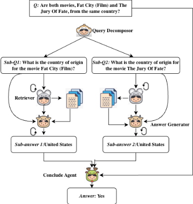
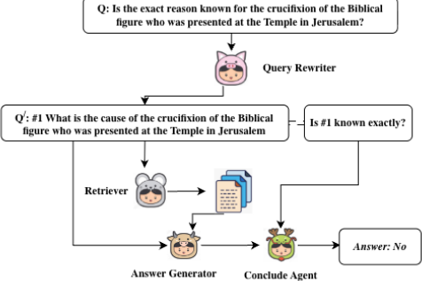
对于这一因果多跳问题（图 10），HERA 通过显式地将因果证据的检索与对不确定性的推理分离开来加以处理。首先，系统识别目标实体（耶稣），并检索描述钉十字架事件及其促成因素的相关历史与圣经文献来源。随后，推理模块对检索到的证据进行评估，将其中可能存在的模糊性或有争议的解释纳入考量，以判断确切原因是否已被明确知晓。通过维持这种串行的、依赖感知的工作流，HERA 确保每一次推理跳步都建立在有据可依的证据之上，从而最小化幻觉并给出高置信度的答案。这种基于经验的检索与自适应因果推理之间的功能分化，使 HERA 能够稳健地处理那些需要按顺序推断原因与确定性的多跳问题。
案例 3（图11）需要计算两个活动时期在时间上的交集，这不仅要求并行检索，还要求对检索到的区间执行后续的算术-逻辑运算。系统正确地分解了查询，并检索到了准确的单个活动时期：Hutchison 为 1914-1938，Howard 为 1921-1944。然而，Answer Generator 返回了“1914-1944”——即两个区间的并集，而非它们的交集（正确结果应为 1921-1938）。这一失败揭示了一个根本性局限：系统缺乏显式的集合论推理模块。这表明，对于需要对检索到的事实进行数值或逻辑运算的问题，必须设置一个专门的符号计算步骤。这一失败并非检索失败，而是推理组合失败——这一区分对系统设计具有重要意义。
31
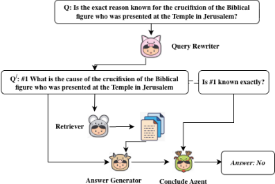
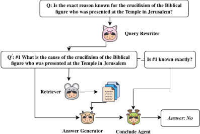
案例 4（图 12）属于交集型多跳（Intersection Multi-hop）类型，其错误展示了处理多实体属性重叠时的一个关键挑战。该流水线的目标是找出一个同时适用于 Pavel Alexandrov 和 Valentin Turchin 的属性。在本例中，预期的属性是“苏联”。然而，Query Rewriter 将查询重新表述为围绕“他们以什么而闻名”，使焦点转向了职业成就（数学家、计算机科学家），而非共同的国籍或隶属关系。因此，Retriever 检索到的是关于他们职业生涯的证据，Evidence Selector 突出显示了学科角色，最终导致 Conclude Agent 输出了“科学家”。
32